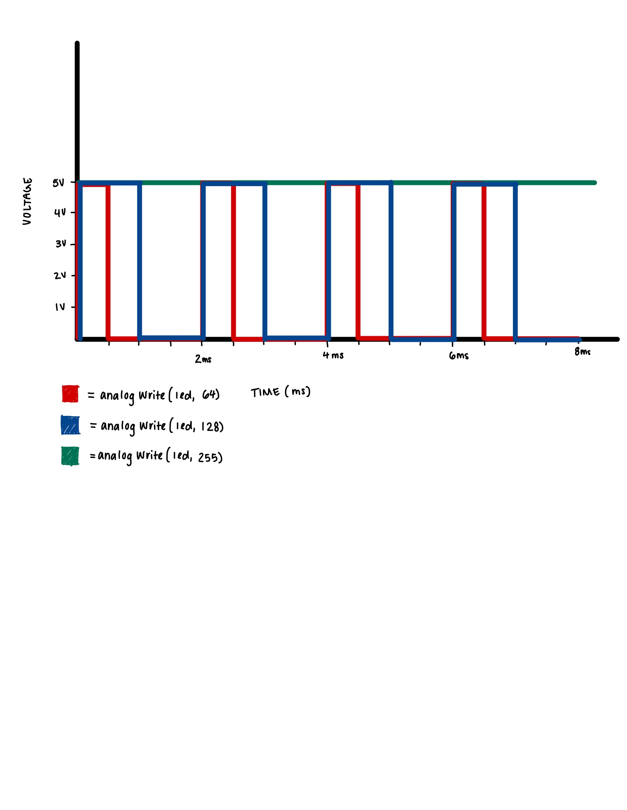

Schematic
This is a schematic of the circuit that I built for this project. I decided to use a 220 Ohm resistor for the RGB LED
because I calculated in a previous assignment (see A2) that approximately an 80 Ohm resistance was needed for the blue light.
I decided to use a 220 Ohm resistor to provide a safe current flow because it is safer to use a higher resistance.
The calculations below explain how I determine the resistors for the seven segment display and the photocell.
These are the calculations that I used to determine which resistors to use. I used a 220 Ohm resistor for each of the segments of
the seven segment display because I looked up the datasheet and determined that approximatly 2.2 Volts would be dropped across each segment.
Using Ohm's Law, I calculated a 140 Ohm resistance was needed, however I decided to use a 220 Ohm resistor to be safe.
I also determined that a 10 Kilo Ohm resistor was needed for the photocell because I measured the light in my room using a multimeter
to test the maxiumum and minimum of the resistance generated by the photocell. Based on this I calculated that 17.5 Kilo Ohms of resistance
would be an appropriate middle ground, so I decided to use a standard 10 Kilo Ohm resistor since it is close to that value.
Circuit

This is a picture of the circuit that I built on a breadboard.
I connected each segment of the seven segment display to a different pin because this allowed me to code different behavior for each segment.
I connected the photocell to an Analog Input pin because this allowed me to read the value of the light in the room by translate
the incoming voltage into a digital value.
I connected the RGB LED to its own pin becuase this allowed me to control the brightness of that LED. Note that it was not necessary to
compelte this circuit with an RGB LED, however this allowed for the posibility of adding more functionality to the ciruit.
Code
The following code was written for this assignment using the Arduino IDE:
// Initialize a variable for segment a at pin 7
int a = 7;
// Initialize a variable for segment b at pin 6
int b = 6;
// Initialize a variable for segment c at pin 5
int c = 5;
// Initialize a variable for segment d at pin 11
int d = 11;
// Initialize a variable for segment e at pin 10
int e = 10;
// Initialize a variable for segment f at pin 8
int f = 8;
// Initialize a variable for segment g at pin 9
int g = 9;
// Initialize a variable for segment dp at pin 4
int dp = 4;
// Initialize the analog input pin that the photocell is attached to
const int analogInPin = A0;
// Initialize the analog output pin that the LED is attached to
const int analogOutPin = 3;
// Initialize the value read from the Photocell
int sensorValue = 0;
// Initialize the value output to the PWM (analog out)
int outputValue = 0;
// Initialize a counter value to keep track of which number to display
int count = 0;
// Write functions for displaying each number:
// display number 1
void display1(void) {
// Write the pin at segment b to HIGH voltage
digitalWrite(b,HIGH);
// Write the pin at segment c to HIGH voltage
digitalWrite(c,HIGH);
}
// display number 2
void display2(void) {
// Write the pin at segment a to HIGH voltage
digitalWrite(a,HIGH);
// Write the pin at segment b to HIGH voltage
digitalWrite(b,HIGH);
// Write the pin at segment g to HIGH voltage
digitalWrite(g,HIGH);
// Write the pin at segment e to HIGH voltage
digitalWrite(e,HIGH);
// Write the pin at segment d to HIGH voltage
digitalWrite(d,HIGH);
}
// display number 3
void display3(void) {
// Write the pin at segment a to HIGH voltage
digitalWrite(a,HIGH);
// Write the pin at segment b to HIGH voltage
digitalWrite(b,HIGH);
// Write the pin at segment c to HIGH voltage
digitalWrite(c,HIGH);
// Write the pin at segment d to HIGH voltage
digitalWrite(d,HIGH);
// Write the pin at segment g to HIGH voltage
digitalWrite(g,HIGH);
}
// display number 4
void display4(void) {
// Write the pin at segment f to HIGH voltage
digitalWrite(f,HIGH);
// Write the pin at segment b to HIGH voltage
digitalWrite(b,HIGH);
// Write the pin at segment g to HIGH voltage
digitalWrite(g,HIGH);
// Write the pin at segment c to HIGH voltage
digitalWrite(c,HIGH);
}
// display number 5
void display5(void) {
// Write the pin at segment a to HIGH voltage
digitalWrite(a,HIGH);
// Write the pin at segment f to HIGH voltage
digitalWrite(f,HIGH);
// Write the pin at segment g to HIGH voltage
digitalWrite(g,HIGH);
// Write the pin at segment c to HIGH voltage
digitalWrite(c,HIGH);
// Write the pin at segment d to HIGH voltage
digitalWrite(d,HIGH);
}
// display number 6
void display6(void) {
// Write the pin at segment a to HIGH voltage
digitalWrite(a,HIGH);
// Write the pin at segment f to HIGH voltage
digitalWrite(f,HIGH);
// Write the pin at segment g to HIGH voltage
digitalWrite(g,HIGH);
// Write the pin at segment c to HIGH voltage
digitalWrite(c,HIGH);
// Write the pin at segment d to HIGH voltage
digitalWrite(d,HIGH);
// Write the pin at segment e to HIGH voltage
digitalWrite(e,HIGH);
}
// display number 7
void display7(void) {
// Write the pin at segment a to HIGH voltage
digitalWrite(a,HIGH);
// Write the pin at segment b to HIGH voltage
digitalWrite(b,HIGH);
// Write the pin at segment c to HIGH voltage
digitalWrite(c,HIGH);
}
// display number 8
void display8(void) {
// Write the pin at segment a to HIGH voltage
digitalWrite(a,HIGH);
// Write the pin at segment b to HIGH voltage
digitalWrite(b,HIGH);
// Write the pin at segment g to HIGH voltage
digitalWrite(g,HIGH);
// Write the pin at segment c to HIGH voltage
digitalWrite(c,HIGH);
// Write the pin at segment d to HIGH voltage
digitalWrite(d,HIGH);
// Write the pin at segment e to HIGH voltage
digitalWrite(e,HIGH);
// Write the pin at segment f to HIGH voltage
digitalWrite(f,HIGH);
}
// display number 9
void display9(void) {
// Write the pin at segment a to HIGH voltage
digitalWrite(a,HIGH);
// Write the pin at segment b to HIGH voltage
digitalWrite(b,HIGH);
// Write the pin at segment g to HIGH voltage
digitalWrite(g,HIGH);
// Write the pin at segment c to HIGH voltage
digitalWrite(c,HIGH);
// Write the pin at segment d to HIGH voltage
digitalWrite(d,HIGH);
// Write the pin at segment f to HIGH voltage
digitalWrite(f,HIGH);
}
// display number 0
void display0(void) {
// Write the pin at segment a to HIGH voltage
digitalWrite(a,HIGH);
// Write the pin at segment b to HIGH voltage
digitalWrite(b,HIGH);
// Write the pin at segment c to HIGH voltage
digitalWrite(c,HIGH);
// Write the pin at segment d to HIGH voltage
digitalWrite(d,HIGH);
// Write the pin at segment e to HIGH voltage
digitalWrite(e,HIGH);
// Write the pin at segment f to HIGH voltage
digitalWrite(f,HIGH);
}
// Clear the display of all numbers
void clearDisplay(void) {
// Write the pin at segment a to LOW voltage
digitalWrite(a,LOW);
// Write the pin at segment b to LOW voltage
digitalWrite(b,LOW);
// Write the pin at segment g to LOW voltage
digitalWrite(g,LOW);
// Write the pin at segment c to LOW voltage
digitalWrite(c,LOW);
// Write the pin at segment d to LOW voltage
digitalWrite(d,LOW);
// Write the pin at segment e to LOW voltage
digitalWrite(e,LOW);
// Write the pin at segment f to LOW voltage
digitalWrite(f,LOW);
}
// Set up all pins
void setup() {
// Begin a Serial session to help with debugging
Serial.begin(9600);
// Initialize a variable to count inside the for loop
int i;
// Use a for loop to inialize all pins
for( i = 4; i <= 11; i++ ) {
// Initialize the seven segment pins as OUTPUT
pinMode(i,OUTPUT);
}
}
// Loop through the pattern
void loop() {
// read the analog in value:
sensorValue = analogRead(analogInPin);
// constrain the sensor value to between 500 and 800 to see the brightness differences better
int sensVal = constrain(sensorValue, 500, 800);
// print the input results to the Serial Monitor:
Serial.print("sensor = ");
// print the value to the Serial Monitor:
Serial.println(sensVal);
// map it to the range of the analog out:
outputValue = map(sensVal, 500, 800, 0, 255);
// print the output results to the Serial Monitor:
Serial.print("wrting to led = ");
// print the value to the Serial Monitor:
Serial.println(outputValue);
// Write the analog out value to the LED:
analogWrite(analogOutPin, outputValue);
// Check if there is a low sensor value less than 600, this means there is darkness
if (sensVal <= 600) {
// if count is zero display the number zero
if (count == 0) {
// clear any previous number from the display
clearDisplay();
// call the display0() function to display the number 0
display0();
// wait 200 miliseconds
delay(200);
// print the number to the Serial Monitor
Serial.println("display zero");
// if count is one display the number one
} else if (count == 1) {
// clear any previous number from the display
clearDisplay();
// call the display1() function to display the number 1
display1();
// wait 200 miliseconds
delay(200);
// print the number to the Serial Monitor
Serial.println("display one");
// Display the number of the count
} else if (count == 2) {
// clear any previous number from the display
clearDisplay();
// call the display2() function to display the number 2
display2();
// wait 200 miliseconds
delay(200);
// print the number to the Serial Monitor
Serial.println("display two");
// Display the number of the count
} else if (count == 3) {
// clear any previous number from the display
clearDisplay();
// call the display3() function to display the number 3
display3();
// wait 200 miliseconds
delay(200);
// print the number to the Serial Monitor
Serial.println("display three");
// Display the number of the count
} else if (count == 4) {
// clear any previous number from the display
clearDisplay();
// call the display4() function to display the number 4
display4();
// wait 200 miliseconds
delay(200);
// print the number to the Serial Monitor
Serial.println("display four");
// Display the number of the count
} else if (count == 5) {
// clear any previous number from the display
clearDisplay();
// call the display5() function to display the number 5
display5();
// wait 200 miliseconds
delay(200);
// print the number to the Serial Monitor
Serial.println("display five");
// Display the number of the count
} else if (count == 6) {
// clear any previous number from the display
clearDisplay();
// call the display6() function to display the number 6
display6();
// wait 200 miliseconds
delay(200);
// print the number to the Serial Monitor
Serial.println("display six");
// Display the number of the count
} else if (count == 7) {
// clear any previous number from the display
clearDisplay();
// call the display7() function to display the number 7
display7();
// wait 200 miliseconds
delay(200);
// print the number to the Serial Monitor
Serial.println("display seven");
// Display the number of the count
} else if (count == 8) {
// clear any previous number from the display
clearDisplay();
// call the display8() function to display the number 8
display8();
// wait 200 miliseconds
delay(200);
// print the number to the Serial Monitor
Serial.println("display eight");
// Display the number of the count
} else if (count == 9) {
// clear any previous number from the display
clearDisplay();
// call the display9() function to display the number 9
display9();
// wait 200 miliseconds
delay(200);
// print the number to the Serial Monitor
Serial.println("display nine");
// reset the count after getting to 9
count = 0;
}
// increase the count number
count++;
}
// wait 2 milliseconds before the next loop for the analog-to-digital
// converter to settle after the last reading:
delay(2);
}
Questions
1: In your voltage divider, can the variable resistor be either R1 or R2 or does it need to be one or the other?
Justify your answer with example calculations.

answer
2: Draw a graph where the x-axis is time and the y-axis is voltage.
Plot the voltage at V-measure (where your pin is reading the voltage) of your voltage divider of your shared gif/video.
answer
answer
3: AnalogWrite and analogRead are respectively 8-bit and 10-bit values.
Imagine you had 10-bit PWM and a 16-bit analog-to-digital converter instead.
How would this change your map() code? Explain your answer.
A 16-bit analog-to-digital converter would be able to read values from 0 to 2^16 which is 65,536.
Therefore, the map() code would need to be changed to reflect this new range. The new map() code would be:
map(sensorValue, 0, 65535, 0, 1023);
This would map the 16-bit input values to the 10-bit PWM output values.
4: Did you use AI tools in completing this assignment? If yes, please provide details on how/when,
as well as a brief reflection. If no, you can either leave this question blank, or provide other information if you'd like.
No, I did not use AI tools in completing this assignment.